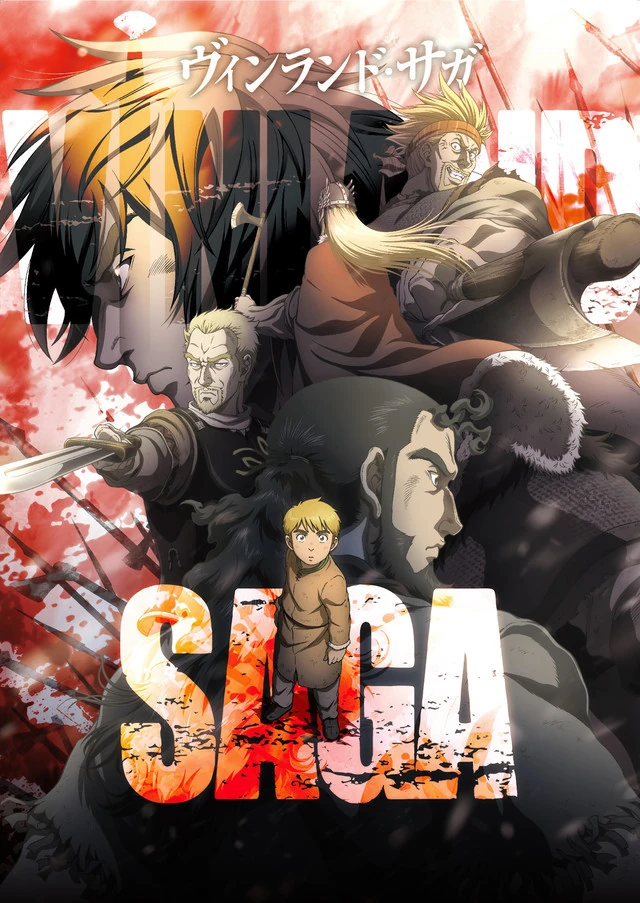

Vinland Saga

No ano 1013 depois de Cristo, o líder viking Thors Snorresson é morto pelo mercenário Askeladd
em um ataque inesperado. Tudo isso é presenciado pelo garoto Thorfinn, que cresce sendo
criado no grupo
liderado pelo assassino de seu pai. O jovem então treina incessantemente para, um dia, matar Askeladd e
partir para a Vinlândia, um território localizado na costa nordeste do Canadá.
Além do plano de vingança, Thorfinn participa de outros eventos aleatórios que integram a expansão nórdica
pela Europa.
Outro nome importante em sua jornada é o rei Canuto, regente da Dinamarca e da Inglaterra.
Ele é inspirado
em Canuto II, o Grande, personagem escandinavo histórico cujos descendentes foram responsáveis pela conquista normanda
da Inglaterra.